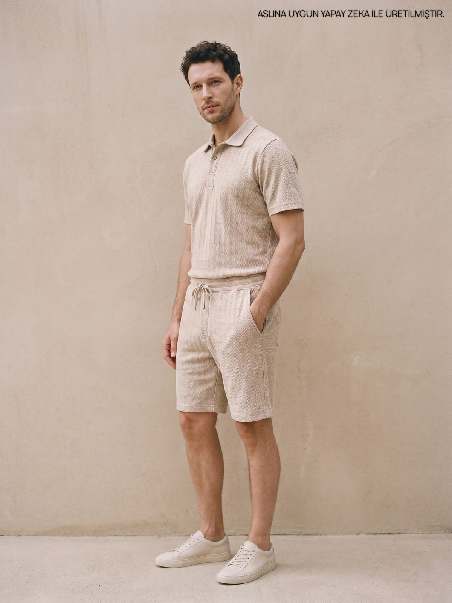
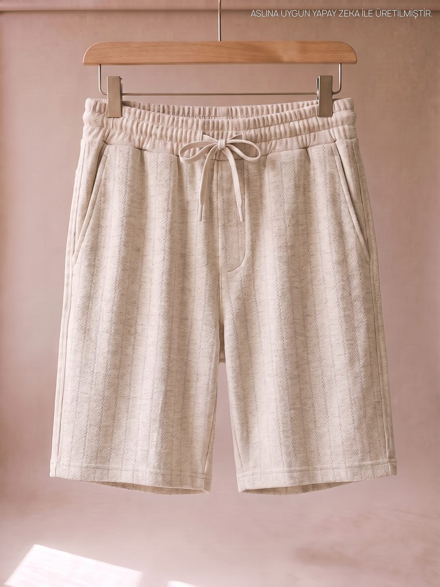
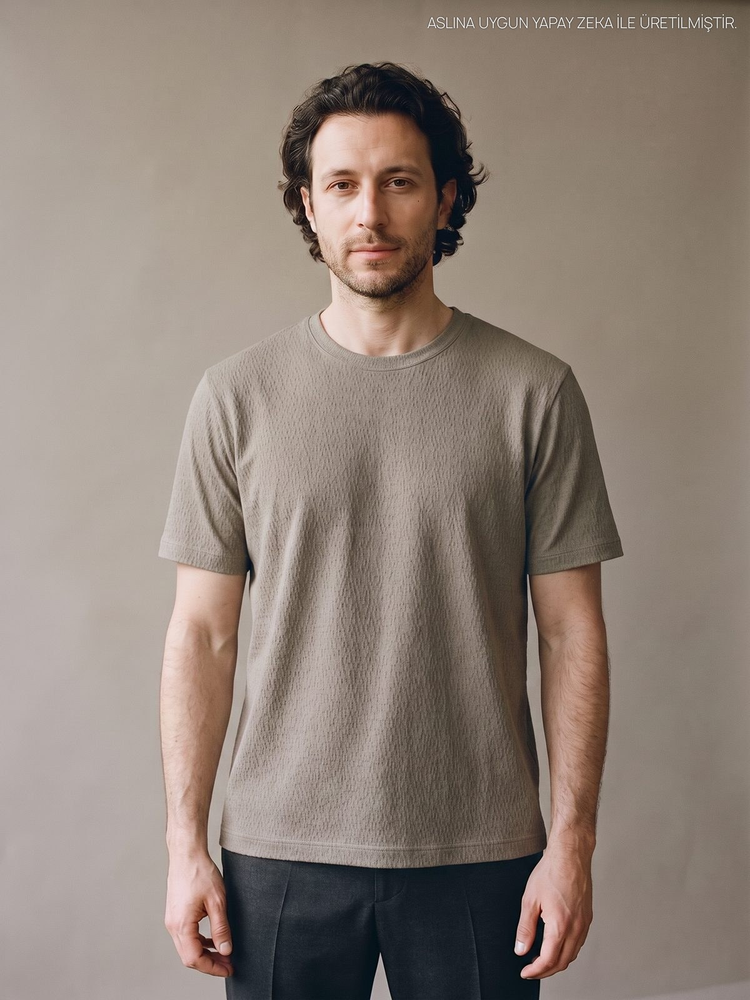
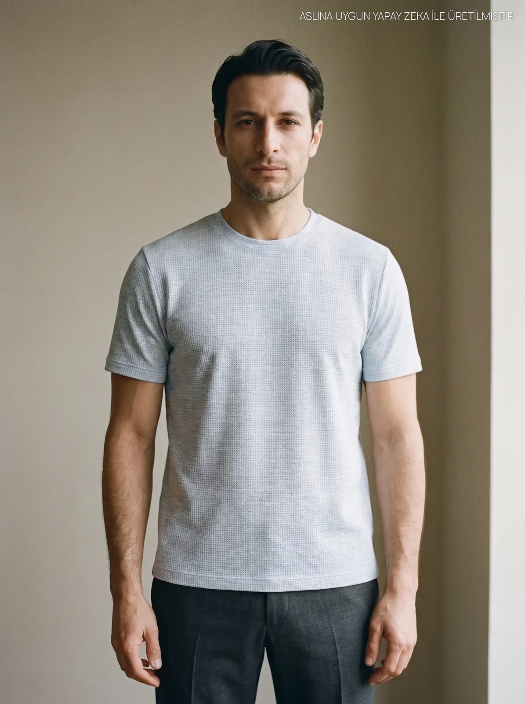

Bej Erkek Keten Görünümlü Jakarlı Polo Yaka Tişört
₺1.300
Popüler: keten tişört, polo yaka, bermuda şort, büyük beden
New Collection · Yaz 26
Kırçıl melanj kumaş, altı sakin ton. Polo, tişört ve şort aynı aileden. Takım kur ya da tek tek giy.

Parçalar
Üst ve alt aynı renk skalasında. Kombin düşünmeye gerek yok.












Renk beyazın içine karışmış ince bir lif olarak okunur. Beyazın içinde mavi, beyazın içinde bej.
Keten Serisi · Yaz 26